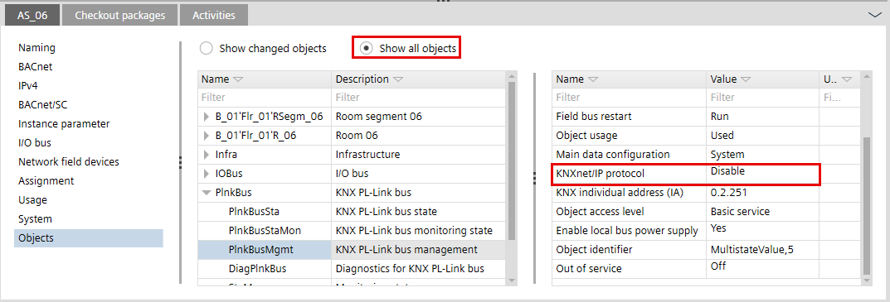
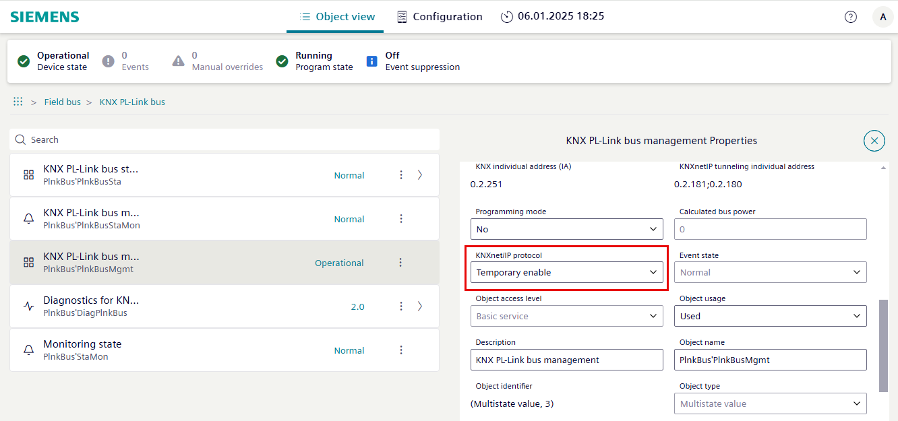

Temporarily enabling/disabling KNX/IP tunneling on DXR2 and PXC3
With the firmware for DXR2 and PXC3 (V01.21.194.xxx and newer), the functionality “KNX/IP tunneling” is disabled by default for network security reasons. An open UDP port increases the risk of potential vulnerabilities. When DXR starts, the KNX/IP protocol is disabled. For commissioning or diagnostic purposes, it can be enabled temporarily in the Web interface. The KNX/IP protocol is disabled again the next time the DXR2 restarts.
This functionality is in Disable state on automatic restart of the device. Enabling the KNX/IP tunneling in the offline engineering has no impact and the functionality will be in Disable state after download.
NOTICE

Risk of potential vulnerabilities
Network and devices can be manipulated so that reengineering or further computing consequences can occur.
- Disable the KNXnet/IP protocol after finishing commissioning or diagnostics.
Note: There is no automatic timeout where the KNXnet/IP protocol resets.
Show the current status with ABT Site
- The Ethernet connection is established.
- Go to Building > Building structure.
- Select the building hierarchy
 or a floor hierarchy
or a floor hierarchy  .
. - Select the desired DXR2 or PXC3 device.
- Select the Objects tab.
- Select Show all objects.
- In the left work area, select the PlnkBus > PlnkBusMgmt property.
- In the right work area, select the KNXnet/IP protocol.
- The status of the KNXnet/IP protocol is displayed as
Temporary enableorDisable. - The KNXnet/IP protocol has to be temporary enabled or disabled in Web interface.

Change status with the Web interface
- The Web interface of the device is launched.
- The feature is supported by the Desigo PXC4/5/7 device from version 1.6 onwards.
- Go to Object view > Field bus.
- Select KNX PL-Link bus > KNXPL-Link bus management.
- In the KNXnet/IP protocol drop-down list, select Temporary enable or Disable.
- Confirm the selection.
